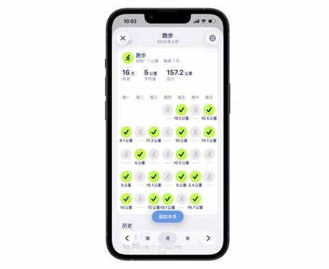
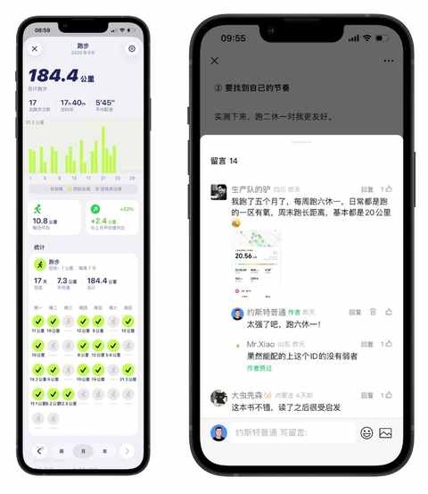
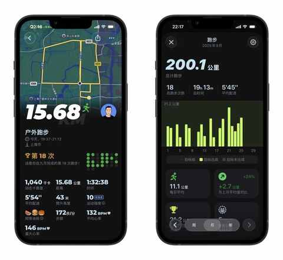
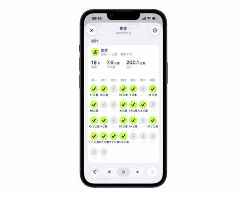
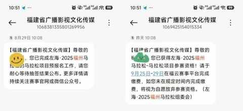

提前 5 天完成！跑步两年挑战月跑200km成功，福州马拉松中签，即将解锁人生中第一个全马！
一、提前完成 200km
1️⃣ 挑战是破旧迎新
可能对于许多跑量 200km 以上的跑友来说，一个月跑 200km 是再正常不过的事情，如果要出成绩这个跑量还少了很多。
但对于我这个刚跑两年，才刚刚入门跑步的中年人来说，月跑200km真心是一个不小的挑战。

不只是在于之前没做到过心里没底，主要是必须打破前两年养成的习惯和节奏：
以往 90% 的时间都是跑一休一，有时候也会偷懒，跑一次休 2 天 3 天。
要顺利跑完 200km，需要打破旧的习惯和节奏，形成新的，从而创造有利条件去增加完成挑战的可能性。
2️⃣ 他者的力量
在 9月22 号的时候有发给一篇关于挑战月跑200km的文章：
- 完成75%！跑步两年首次挑战月跑200km，分享这4个真实感受
其中的一条评论有鼓舞到我，这位网友留言说他采取的是跑六休一的方式来跑，周末会安排 20km 的长距离。
当时已连跑 3 天，有计划休息一天再继续，看完这条留言就改了主意：
在当下并没有感到有多累的情况下说明身体状态良好，何不也试试跑六休一！
所以在周三跑了 12km 之后，默默打开 Grow APP 看到距离 200km仅有 15.6 公里的时候，就已经想到周四的晚上要从 7 点半跑到 9 点，有 6 分配完成这 15.6km.

于是乎，昨天也就是 9月 25 日周四的晚上7点半，边听着雷总的年度演讲边开始跑步，顺利完成这 15.68km。

今天是跑六休一的第六天，按计划是继续跑，不会因为本月 200km 的目标已完成而发生变化。
下午在儿子上羽毛球课的时候，会继续跑个 5km 或 8km 或 10km，到时候配速和距离都根据体感来，待完成后便又解锁一个全新的体验与感受。

二、即将解锁人生中第一个全马
前段时间刚中签了合肥马拉松，不过报名的是半马：
- 中签！解锁首个省会城市马拉松：2025 合肥马拉松！
当时考虑到 10 月 26 号有一个桐庐半马，怕当天的体力值不足，两周的休息无法支撑在半马比赛后的两周后再跑一个全马，毕竟任何事情都要量力而行，运动方面还是保守点更安全更稳妥。
所以合肥马拉松报名的时候果断选择半马，也是我的首个省会城市马拉松。
当时偶然看到福州马拉松的报名信息，比赛时间是 12 月 14 日，恰好与合肥马拉松相隔一个多月。

估摸着有充足的备赛和身体恢复的时间，便报名碰碰运气，完全没想到的是，第一个全马会幸运中签。
第一次参加全马比赛，会采取保守的策略来进行，以完赛为最大目标：
- 争取在 430 里面完赛，后半程状态尚可再试试看能否跑到 400
- 赛前一个月会跑一个 30km 或 35km 让身体适应适应
- 10 月和 11 月的跑量维持在 200km+，适当增加周末长距离的频次
再过两个多月，一个跑步两年的中年人，就要解锁人生中第一个全马啦！